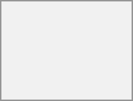

If you plan on setting up a new calendar without transferring any old data from your previous calendar, creating a new calendar is the way the user should go.
Click on + New Calendar in the left sidebar.
Type in a name for your new calendar, e.g. "Work", "Home" or "Marketing planning".
After clicking on the checkmark, your new calendar is created and can be synced across your devices, filled with new events and shared with your friends and colleagues.
If you want to transfer your calendar and their respective events to your
Click on the Calendar settings icon.
After clicking on Import Calendar, found in the General section, you can select one or more calendar files from your local device to upload.
Select a Calendar to import into.
The upload can take some time and depends on how big the calendar you import is. A blue progress bar will appear below "Calendar Settings".
The
Individual events are often distributed as .ics files (sometimes via a button labelled "iCal", "a vendor Calendar" or "a mail client"). You can import them into
Click on the Calendar settings icon.
After clicking on Import calendar you can select one or more .ics files from your local device to upload. Single-event files are added to the calendar you select.
Select a Calendar to import into.
The upload can take some time and depends on how big the calendar/event you import is. A blue progress bar will appear below "Calendar Settings".
The
Sometimes you may want to change the color or the entire name of a previous imported or created calendar. You may also want to export it to your local hard drive or delete it forever.
Please keep in mind that deleting a calendar is an irreversible action. After deletion, there is no way of restoring the calendar unless you have a local backup.
Click on the "pen" icon of the respective calendar. You will see a new popup that will allow you to change the calendar name and color, and buttons to delete or export the calendar.
You can toggle the checkbox "Never show me as busy (set calendar to transparent)" to influence if this calendars' events are taken into account in Free/Busy calculations. If checked, no events in this calendar will be taken into account, your schedule will always be free, regardless of an events' settings.
You may share your calendar with local users, groups or with remote users on federated servers.
Calendars may be shared with write access or read-only. When sharing a calendar with write access, users with whom the calendar is shared will be able to create new events into the calendar as well as edit and delete existing ones.

Calendar shares currently cannot be accepted or rejected. If you want to stop having a calendar that someone shared with you, you can click on the 3-dot menu next to the calendar in the calendar list and click on "Unshare from me". To restore a share, the calendar can be reshared again, either for the whole group, resetting all unshares, or for a single user.
New in version 34.0.0:
In the app settings, you can delegate your calendars to other users so they can manage them for you. You can grant read access if they should only view the calendar, or write access if they should create, edit and delete events.
Calendar delegation also works with other clients that support calendar delegation.
By default, delegatees are not added as attendees of events that they create for a delegator, the delegator remains the organizer of the event. If the event has a Talk conversation attached, both the delegator and the delegatee are moderators of that conversation.
Currently, delegating your account delegates all of your calendars. Delegating individual calendars is not yet supported.
New in version 32.0.0:
Changed in version 33.0.0:
Sharing a calendar with a user on another
Starting with
Calendars can be published through a public link to make them viewable (read-only) to external users. You may create a public link by opening the share menu for a calendar and clicking on « + » next to « Share link ». Once created the user can copy the public link to your clipboard or send it through email.
There's also an « embedding code » that provides an HTML iframe to embed your calendar into public pages.
Multiple calendars can be shared together by adding their unique tokens to the end of an embed link. Individual tokens can be found at the end of each calendar's public link. The full address will look like https://cloud.example.com/index.php/apps/calendar/embed/<token1>-<token2>-<token3>
To change the default view or date of an embedded calendar, you need to provide a URL that looks like https://cloud.example.com/index.php/apps/calendar/embed/<token>/<view>/<date>. In this URL you need to replace the following variables:
<token> with the calendar's token,
<view> with one of dayGridMonth, timeGridWeek, timeGridDay, listMonth, listWeek, listDay. The default view is dayGridMonth and the normally used list is listMonth,
<date> with now or any date with the following format <year>-<month>-<day> (e.g. 2019-12-28).
On the public page, users are able to get the subscription link for the calendar and export the whole calendar directly. For the full details, click here.
You can embed your calendars into supported apps like Talk, Notes, etc... by either sharing the public link to make the embed viewable (read-only) to all users or by using the internal link to make it private.
You can subscribe to iCal calendars directly inside of your
Click on + New calendar in the left sidebar
Click on + New subscription from link (read-only)
Type in or paste the link of the shared calendar you want to subscribe to.
Finished. Your calendar subscriptions will be updated regularly.
Subscriptions are refreshed every week by default. Your administrator may have changed this setting.
New in version 4.4:
You can subscribe to a read-only holiday calendar provided by a mail client.
Click on + New calendar in the left sidebar
Click on + Add holiday calendar
Find your country or region and click Subscribe